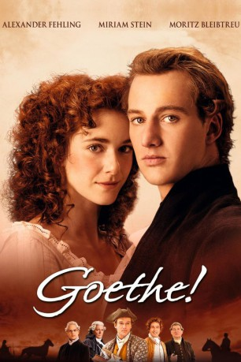

#5155 Goethe!
 
 IMDB-Wertung: 6.7 / 10
IMDB-Wertung: 6.7 / 10  Metascore: 0
Metascore: 0 
Johann Wolfgang von Goethe ist durchs Jura-Examen gefallen und wird zur Strafe vom Papa zum Reichskammergericht in die Provinz geschickt, wo er für Gerichtsrat Kestner Akten wälzen muss. In seiner Freizeit zieht der Freund von Wein, Weib und Gesang mit seinem Referendarskollegen um die Häuser bzw. auf die Märkte und wirft alsbald ein Auge auf die hübsche Lotte aus armen Verhältnissen, die leider seinem Vorgesetzten versprochen ist. Das große Herzeleid führt zu seinem ersten künstlerischen Erfolg "Die Leiden des jungen Werther".
Jahr: 2010
Dauer: 104 Minuten
FSK: 6
Land: Deutschland Studio: Warner Bros.Tonspuren:
Untertitel:
Auflösung: 1080p (1920x816) Größe: 5048 MB
Genre: Drama, Liebe
Regisseur: Philipp Stölzl
Drehbuch: Randy Kornfield
Soundtrack:
Darsteller:
 Alexander Fehling als Johann Goethe
Alexander Fehling als Johann Goethe Miriam Stein als Lotte Buff
Miriam Stein als Lotte Buff Moritz Bleibtreu als Albert Kestner
Moritz Bleibtreu als Albert Kestner Volker Bruch als Wilhelm Jerusalem
Volker Bruch als Wilhelm Jerusalem Burghart Klaußner als Lottes Vater
Burghart Klaußner als Lottes Vater Catherine Flemming als Rotschopf
Catherine Flemming als Rotschopf- Henry Hübchen als Johanns Vater
 Hans-Michael Rehberg als Kammermeier
Hans-Michael Rehberg als Kammermeier- Josef Ostendorf als Professor 1
- Christoph Heckel als Professor 2
- Sebastian Kaufmane als Student 1
- Jonas Hien als Student 2
- Gerald Fiedler als Kutscher Strassburg
- Johann Adam Oest als Dichter
- Stefan Haschke als Johanns Freund Merck
- Xaver Hutter als Johanns Freund Vogler
- Anna Böttcher als Hausmädchen
- Johann Jürgens als Assessor Schleyn
- Vitus Wieser als Assessor Borgmann
- Anna Blomeier als Chordame
- Linn Reusse als Anna Buff
- Leonie Siegel als Gretchen Buff
- Gwendolyn Göbel als Friederike Buff
- Maxine Göbel als Elizabeth Buff
- Ansgar Göbel als Heinrich Buff
 Tristan Göbel als Gustav Buff
Tristan Göbel als Gustav Buff- Oscar Weidner als Oskar Buff
- Hans-Jürgen Müller-Hohensee als Perückenmacher
- Karl Karliczek als Postverwalter
- Melanie Schmidli als Zigeunemädchen 1
- Neelesha Barthel als Zigeunemädchen 2
- Andreas Schröders als Gerichtsarst
- Sven Pippig als Gefängnwärter
- Guido Lambrecht als Schneider
- Manolo Bertling als Junger Mann
- Conny Mews als Junge Frau
- Harald Höbinger als Buchkunde 1
- Christian Ehrich als Bychkunde 2
- Hilmar Eichhorn als Buchhändler
 Axel Milberg als Verleger
Axel Milberg als Verleger
Datei: X:\2010(G-M)\Goethe! (2010, FSK6, 1920x816).mkv seit 27.12.2016
Festplatte: HD 2010(G-Z)-2011(A-F)
 Es gibt insgesamt 85 Filme in der Gruppe '2010(G-M)'
Es gibt insgesamt 85 Filme in der Gruppe '2010(G-M)'